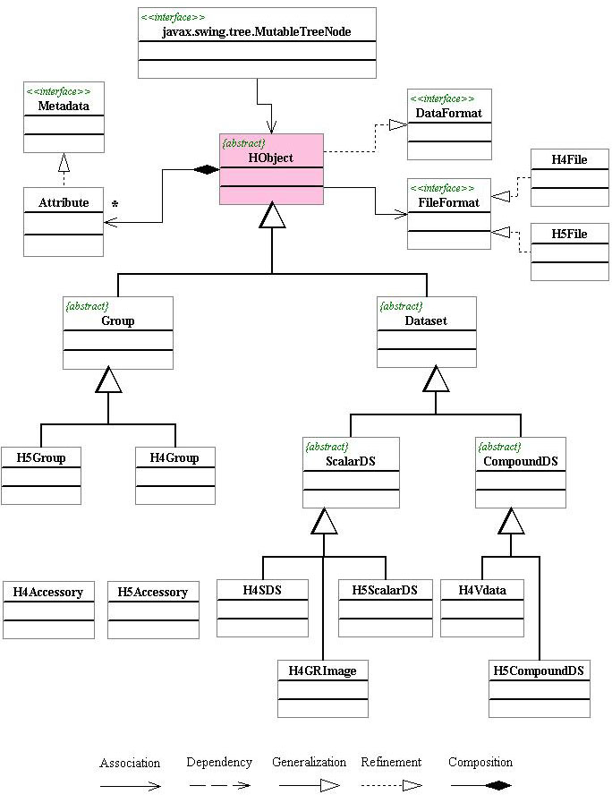

Design of the hdfobj package
class hierarchy
Figure 1 shows the class hierarchy of the HDF object package. In the following,
we give brief description of these Java classes of HDF objects. For details,
read the Javadocs.

Figure 1 The Class Hierarchy of HDF Objects.
-
public interface DataFormat
-
DataFormat is the top level interface. This interface defines the basic
APIs for accessing file resources. It loads and saves data content or descriptions
from/to file. Implementation of DataFormat defines how data is loaded to
memory and how data is saved to disk. The design of this interface is
intended to support modular data I/O. Applications of DataFormat can be
easily extended to support new data objects which implement this DataFormat.
-
public abstract class HObject
implements java.io.Serializable, DataFormat
-
HObject is the superclass of all HDF data objects, implementing DataFormat
interface. HObject is an abstract class. It includes general and common
fields and operations for all HDF4 and HDF5 data objects. All the HDF4
and HDF5 data objects are inherited from HObject. At the top level of hierarchy,
both HDF4 and HDF5 have the same super-classes such Group, and Dataset.
At bottom level of hierarchy, HDF4 and HDF5 objects have their own implementation
such H4Vdata, H4SDS, H4GRImage, H5ScalarDS, H5CompoundDS, and etc.
-
public abstract class Group
extends HObject
-
Group is a superclass of HDF4/5 group, inheriting HObject. Group is an
abstract class. Its implementing sub-classes are the H4Group and H5Group.
This class includes general information of a group object such as the parent
group and common operations for both HDF4 and HDF5 groups.
-
public abstract class H4Group
extends Group
-
H4Group or vgroup is a structure designed to associate related data objects.
The general structure of a vgroup is similar to that of the UNIX file system
in that the vgroup may contain references to other vgroups or HDF data
objects ust as the UNIX directory may contain subdirectories or files.
The data objects that belong to a vgroup are often referred to as the vgroup's
members.
-
public abstract class H5Group
extends Group
-
H5Group is a structure containing zero or more HDF5 objects. A group has
two parts: 1) A group header, which contains a group name and a list of
group attributes. 2) A group symbol table, which is a list of the HDF5
objects that belong to the group. Every HDF5 object has at least one name
and a set of names can be stored together in a group. Each group implements
a name space where the names are any length and unique with respect to
other names in the group.
-
public abstract class Dataset
extends HObject
-
Dataset is a superclass for all HDF4 and HDF5 datasets, inheriting HObject.
Dataset is an abstract class. Its implementing sub-classes are the HDF4
and HDF5 datasets. This class includes general information of a Dataset
object such as data type and dimensions, and common operation on Datasets
of HDF4 and HDF5.
-
public abstract class
ScalarDS
extends Dataset
-
ScalarDS is the superclass of HDF4 and HDF5 ScalarDS, inheriting from Dataset.
ScalarDS is an abstract class. Its implementing sub-classes are the H4SDS,
H4GRImage and H5ScalarDS. A scalar dataset is a multiple dimension array
of scalar points such as integer, float and string.
-
public class H4SDS
extends ScalarDS
-
H4SDS describes HDF4 Scientific Data Sets (SDS) and operations performed
on the SDS. A SDS, is a group of data structures used to store and describe
multidimensional arrays of scientific data.
-
public class H4GRImage
extends ScalarDS
-
H4GRImage describes HDF4 general raster(GR) image and operations performed
on the GR image. An HDF4 raster image is a two-dimension array of pixel
values.
-
public class H5ScalarDS
extends ScalarDS
-
H5ScalarDS is an multi-dimension array of HDF5 scalar or atomic datatype
such as integer, float, character, String, Date and Time.
-
public abstract class
CompoundDS
extends Dataset
-
CompoundDS is a superclass of HDF4 Vdata and HDF5 Compound dataset. CompoundDS
is an abstract class, inheriting Dataset. Its implementing sub-classes
are H5Vdata and H5CompoundDS. A compound datatype is a collection of one
or more atomic types or small arrays of such types. Each member of a compound
type has a name which is unique within that type, and a byte offset that
determines the first byte (smallest byte address) of that member in a compound
datum
-
public class H4Vdata
extends CompoundDS
-
H4Vdata or HDF4 Vdata is a two-dimension table of records and fields. A
vdata is like a table that consists of a collection of records whose values
are stored in fixed-length fields. All records have the same structure
and all values in each field have the same data type. Vdatas are uniquely
identified by a name, a class, and a series of individual field names.
-
public class H5CompoundDS
extends CompoundDS
-
H5CompoundDS is a multi-dimension array of HDF5 compound dataset. A HDF5
compound datatype is similar to a struct in C or a common block in Fortran:
it is a collection of one or more atomic types or small arrays of such
types. Each member of a compound type has a name which is unique within
that type, and a byte offset that determines the first byte (smallest byte
address) of that member in a compound datum.
-
public class Attribute
implements java.io.Serializable
-
Attribute is a small dataset to be attached to primary dataset as metadata
information. It is presented as a (name, value) pair. Attributes are not
separate objects in the file, they are always contained in the object header
of the object they are attached to.
-
public final class
H4Accessory
-
The H4Accessory class provides common static methods to HDF4 objects.
-
public final class
H5Accessory
-
The H4Accessory class provides common static methods to HDF5 objects.
December 20, 2001

The
HDF Group
University
of Illinois at Urbana-Champaign
help@hdfgroup.org